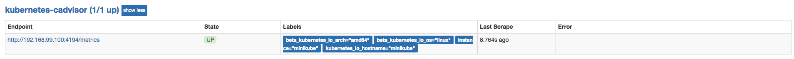
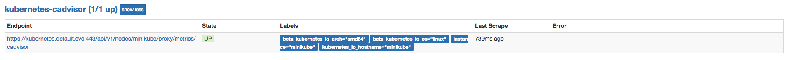

<!doctype html>
<html lang="en" class="no-js">
  <head>
    
      <meta charset="utf-8">
      <meta name="viewport" content="width=device-width,initial-scale=1">
      
      
      
      
      
      <link rel="icon" href="../../assets/favicon.png">
      <meta name="generator" content="mkdocs-1.4.2, mkdocs-material-9.0.15">
    
    
      
        <title>应用容器监控 - Prometheus Learning Path</title>
      
    
    
      <link rel="stylesheet" href="../../assets/stylesheets/main.113286f1.min.css">
      
        
        <link rel="stylesheet" href="../../assets/stylesheets/palette.a0c5b2b5.min.css">
      
      

    
    
    
      
        
        
        <link rel="preconnect" href="https://fonts.gstatic.com" crossorigin>
        <link rel="stylesheet" href="https://fonts.googleapis.com/css?family=Roboto:300,300i,400,400i,700,700i%7CRoboto+Mono:400,400i,700,700i&display=fallback">
        <style>:root{--md-text-font:"Roboto";--md-code-font:"Roboto Mono"}</style>
      
    
    
    <script>__md_scope=new URL("../..",location),__md_hash=e=>[...e].reduce((e,_)=>(e<<5)-e+_.charCodeAt(0),0),__md_get=(e,_=localStorage,t=__md_scope)=>JSON.parse(_.getItem(t.pathname+"."+e)),__md_set=(e,_,t=localStorage,a=__md_scope)=>{try{t.setItem(a.pathname+"."+e,JSON.stringify(_))}catch(e){}}</script>
    
      

    
    
    
  </head>
  
  
    
    
    
    
    
    <body dir="ltr" data-md-color-scheme="default" data-md-color-primary="indigo" data-md-color-accent="">
  
    
    
    <input class="md-toggle" data-md-toggle="drawer" type="checkbox" id="__drawer" autocomplete="off">
    <input class="md-toggle" data-md-toggle="search" type="checkbox" id="__search" autocomplete="off">
    <label class="md-overlay" for="__drawer"></label>
    <div data-md-component="skip">
      
        
        <a href="#_1" class="md-skip">
          Skip to content
        </a>
      
    </div>
    <div data-md-component="announce">
      
    </div>
    
    
      

<header class="md-header" data-md-component="header">
  <nav class="md-header__inner md-grid" aria-label="Header">
    <a href="../.." title="Prometheus Learning Path" class="md-header__button md-logo" aria-label="Prometheus Learning Path" data-md-component="logo">
      
  

    </a>
    <label class="md-header__button md-icon" for="__drawer">
      <svg xmlns="http://www.w3.org/2000/svg" viewBox="0 0 24 24"><path d="M3 6h18v2H3V6m0 5h18v2H3v-2m0 5h18v2H3v-2Z"/></svg>
    </label>
    <div class="md-header__title" data-md-component="header-title">
      <div class="md-header__ellipsis">
        <div class="md-header__topic">
          <span class="md-ellipsis">
            Prometheus Learning Path
          </span>
        </div>
        <div class="md-header__topic" data-md-component="header-topic">
          <span class="md-ellipsis">
            
              应用容器监控
            
          </span>
        </div>
      </div>
    </div>
    
    
    
      <label class="md-header__button md-icon" for="__search">
        <svg xmlns="http://www.w3.org/2000/svg" viewBox="0 0 24 24"><path d="M9.5 3A6.5 6.5 0 0 1 16 9.5c0 1.61-.59 3.09-1.56 4.23l.27.27h.79l5 5-1.5 1.5-5-5v-.79l-.27-.27A6.516 6.516 0 0 1 9.5 16 6.5 6.5 0 0 1 3 9.5 6.5 6.5 0 0 1 9.5 3m0 2C7 5 5 7 5 9.5S7 14 9.5 14 14 12 14 9.5 12 5 9.5 5Z"/></svg>
      </label>
      <div class="md-search" data-md-component="search" role="dialog">
  <label class="md-search__overlay" for="__search"></label>
  <div class="md-search__inner" role="search">
    <form class="md-search__form" name="search">
      <input type="text" class="md-search__input" name="query" aria-label="Search" placeholder="Search" autocapitalize="off" autocorrect="off" autocomplete="off" spellcheck="false" data-md-component="search-query" required>
      <label class="md-search__icon md-icon" for="__search">
        <svg xmlns="http://www.w3.org/2000/svg" viewBox="0 0 24 24"><path d="M9.5 3A6.5 6.5 0 0 1 16 9.5c0 1.61-.59 3.09-1.56 4.23l.27.27h.79l5 5-1.5 1.5-5-5v-.79l-.27-.27A6.516 6.516 0 0 1 9.5 16 6.5 6.5 0 0 1 3 9.5 6.5 6.5 0 0 1 9.5 3m0 2C7 5 5 7 5 9.5S7 14 9.5 14 14 12 14 9.5 12 5 9.5 5Z"/></svg>
        <svg xmlns="http://www.w3.org/2000/svg" viewBox="0 0 24 24"><path d="M20 11v2H8l5.5 5.5-1.42 1.42L4.16 12l7.92-7.92L13.5 5.5 8 11h12Z"/></svg>
      </label>
      <nav class="md-search__options" aria-label="Search">
        
        <button type="reset" class="md-search__icon md-icon" title="Clear" aria-label="Clear" tabindex="-1">
          <svg xmlns="http://www.w3.org/2000/svg" viewBox="0 0 24 24"><path d="M19 6.41 17.59 5 12 10.59 6.41 5 5 6.41 10.59 12 5 17.59 6.41 19 12 13.41 17.59 19 19 17.59 13.41 12 19 6.41Z"/></svg>
        </button>
      </nav>
      
    </form>
    <div class="md-search__output">
      <div class="md-search__scrollwrap" data-md-scrollfix>
        <div class="md-search-result" data-md-component="search-result">
          <div class="md-search-result__meta">
            Initializing search
          </div>
          <ol class="md-search-result__list" role="presentation"></ol>
        </div>
      </div>
    </div>
  </div>
</div>
    
    
  </nav>
  
</header>
    
    <div class="md-container" data-md-component="container">
      
      
        
          
        
      
      <main class="md-main" data-md-component="main">
        <div class="md-main__inner md-grid">
          
            
              
              <div class="md-sidebar md-sidebar--primary" data-md-component="sidebar" data-md-type="navigation" >
                <div class="md-sidebar__scrollwrap">
                  <div class="md-sidebar__inner">
                    


<nav class="md-nav md-nav--primary" aria-label="Navigation" data-md-level="0">
  <label class="md-nav__title" for="__drawer">
    <a href="../.." title="Prometheus Learning Path" class="md-nav__button md-logo" aria-label="Prometheus Learning Path" data-md-component="logo">
      
  

    </a>
    Prometheus Learning Path
  </label>
  
  <ul class="md-nav__list" data-md-scrollfix>
    
      
      
      

  
  
  
    <li class="md-nav__item">
      <a href="../../catalogue/" class="md-nav__link">
        目录
      </a>
    </li>
  

    
      
      
      

  
  
  
    
    <li class="md-nav__item md-nav__item--nested">
      
      
      
      
      <input class="md-nav__toggle md-toggle " type="checkbox" id="__nav_2" >
      
      
      
        <label class="md-nav__link" for="__nav_2" id="__nav_2_label" tabindex="0">
          第1章 天降奇兵
          <span class="md-nav__icon md-icon"></span>
        </label>
      
      <nav class="md-nav" data-md-level="1" aria-labelledby="__nav_2_label" aria-expanded="false">
        <label class="md-nav__title" for="__nav_2">
          <span class="md-nav__icon md-icon"></span>
          第1章 天降奇兵
        </label>
        <ul class="md-nav__list" data-md-scrollfix>
          
            
              
  
  
  
    <li class="md-nav__item">
      <a href="../../quickstart/why-monitor/" class="md-nav__link">
        Prometheus简介
      </a>
    </li>
  

            
          
            
              
  
  
  
    <li class="md-nav__item">
      <a href="../../quickstart/prometheus-quick-start/" class="md-nav__link">
        初识Prometheus
      </a>
    </li>
  

            
          
            
              
  
  
  
    <li class="md-nav__item">
      <a href="../../quickstart/install-prometheus-server/" class="md-nav__link">
        安装Prometheus
      </a>
    </li>
  

            
          
            
              
  
  
  
    <li class="md-nav__item">
      <a href="../../quickstart/use-node-exporter/" class="md-nav__link">
        使用Node Exporter采集主机数据
      </a>
    </li>
  

            
          
            
              
  
  
  
    <li class="md-nav__item">
      <a href="../../quickstart/promql_quickstart/" class="md-nav__link">
        使用PromQL查询监控数据
      </a>
    </li>
  

            
          
            
              
  
  
  
    <li class="md-nav__item">
      <a href="../../quickstart/use-grafana-create-dashboard" class="md-nav__link">
        监控数据可视化
      </a>
    </li>
  

            
          
            
              
  
  
  
    <li class="md-nav__item">
      <a href="../../quickstart/prometheus-job-and-instance/" class="md-nav__link">
        任务和实例
      </a>
    </li>
  

            
          
            
              
  
  
  
    <li class="md-nav__item">
      <a href="../../quickstart/prometheus-arch/" class="md-nav__link">
        Prometheus核心组件
      </a>
    </li>
  

            
          
            
              
  
  
  
    <li class="md-nav__item">
      <a href="../../quickstart/SUMMARY/" class="md-nav__link">
        小结
      </a>
    </li>
  

            
          
        </ul>
      </nav>
    </li>
  

    
      
      
      

  
  
  
    
    <li class="md-nav__item md-nav__item--nested">
      
      
      
      
      <input class="md-nav__toggle md-toggle " type="checkbox" id="__nav_3" >
      
      
      
        <label class="md-nav__link" for="__nav_3" id="__nav_3_label" tabindex="0">
          第二章 探索PromQL
          <span class="md-nav__icon md-icon"></span>
        </label>
      
      <nav class="md-nav" data-md-level="1" aria-labelledby="__nav_3_label" aria-expanded="false">
        <label class="md-nav__title" for="__nav_3">
          <span class="md-nav__icon md-icon"></span>
          第二章 探索PromQL
        </label>
        <ul class="md-nav__list" data-md-scrollfix>
          
            
              
  
  
  
    <li class="md-nav__item">
      <a href="../../promql/what-is-prometheus-metrics-and-labels/" class="md-nav__link">
        理解时间序列
      </a>
    </li>
  

            
          
        </ul>
      </nav>
    </li>
  

    
      
      
      

  
  
  
    
    <li class="md-nav__item md-nav__item--nested">
      
      
      
      
      <input class="md-nav__toggle md-toggle " type="checkbox" id="__nav_4" >
      
      
      
        <label class="md-nav__link" for="__nav_4" id="__nav_4_label" tabindex="0">
          第3章 Prometheus告警处理
          <span class="md-nav__icon md-icon"></span>
        </label>
      
      <nav class="md-nav" data-md-level="1" aria-labelledby="__nav_4_label" aria-expanded="false">
        <label class="md-nav__title" for="__nav_4">
          <span class="md-nav__icon md-icon"></span>
          第3章 Prometheus告警处理
        </label>
        <ul class="md-nav__list" data-md-scrollfix>
          
            
              
  
  
  
    <li class="md-nav__item">
      <a href="../../alert/prometheus-alert-manager-overview/" class="md-nav__link">
        Prometheus告警简介
      </a>
    </li>
  

            
          
        </ul>
      </nav>
    </li>
  

    
      
      
      

  
  
  
    
    <li class="md-nav__item md-nav__item--nested">
      
      
      
      
      <input class="md-nav__toggle md-toggle " type="checkbox" id="__nav_5" >
      
      
      
        <label class="md-nav__link" for="__nav_5" id="__nav_5_label" tabindex="0">
          第4章 Exporter详解
          <span class="md-nav__icon md-icon"></span>
        </label>
      
      <nav class="md-nav" data-md-level="1" aria-labelledby="__nav_5_label" aria-expanded="false">
        <label class="md-nav__title" for="__nav_5">
          <span class="md-nav__icon md-icon"></span>
          第4章 Exporter详解
        </label>
        <ul class="md-nav__list" data-md-scrollfix>
          
            
              
  
  
  
    <li class="md-nav__item">
      <a href="../../exporter/what-is-prometheus-exporter/" class="md-nav__link">
        Exporter是什么
      </a>
    </li>
  

            
          
        </ul>
      </nav>
    </li>
  

    
  </ul>
</nav>
                  </div>
                </div>
              </div>
            
            
              
              <div class="md-sidebar md-sidebar--secondary" data-md-component="sidebar" data-md-type="toc" >
                <div class="md-sidebar__scrollwrap">
                  <div class="md-sidebar__inner">
                    

<nav class="md-nav md-nav--secondary" aria-label="Table of contents">
  
  
  
    
  
  
    <label class="md-nav__title" for="__toc">
      <span class="md-nav__icon md-icon"></span>
      Table of contents
    </label>
    <ul class="md-nav__list" data-md-component="toc" data-md-scrollfix>
      
        <li class="md-nav__item">
  <a href="#node" class="md-nav__link">
    基于Node的服务发现模式
  </a>
  
    <nav class="md-nav" aria-label="基于Node的服务发现模式">
      <ul class="md-nav__list">
        
          <li class="md-nav__item">
  <a href="#relabeling" class="md-nav__link">
    使用Relabeling修改采集任务
  </a>
  
</li>
        
      </ul>
    </nav>
  
</li>
      
    </ul>
  
</nav>
                  </div>
                </div>
              </div>
            
          
          
            <div class="md-content" data-md-component="content">
              <article class="md-content__inner md-typeset">
                
                  


<h1 id="_1">应用容器监控</h1>
<p>在第4章的“监控容器运行状态”小节中，我们介绍了如何使用cAdvisor监控主机中容器的运行状态。而Kubernetes直接在Kubelet组件中集成了cAdvisor，cAdvisor会自动采集当前节点上容器CPU，内存，文件系统，网络等资源的使用情况，其默认运行端口为4194。</p>
<p>登录到MiniKube主机，并且访问本机的4194端口，可以获取到当前节点上cAdvisor的监控样本数据：</p>
<pre><code>$ minikube ssh

$  curl 127.0.0.1:4194/metrics
...
# HELP process_start_time_seconds Start time of the process since unix epoch in seconds.
# TYPE process_start_time_seconds gauge
process_start_time_seconds 1.52506226634e+09
# HELP process_virtual_memory_bytes Virtual memory size in bytes.
# TYPE process_virtual_memory_bytes gauge
process_virtual_memory_bytes 1.1649622016e+10
</code></pre>
<p>在本节中，我们将利用Prometheus的服务发现能力，自动的找到这些cAdvisor的采集目标。</p>
<h2 id="node">基于Node的服务发现模式</h2>
<p>在上一小节中，我们已经能够通过Kubernetes自动的发现当前集群中的所有Node节点。</p>
<pre><code> kubernetes_sd_configs:
 - role: node
</code></pre>
<p>如上所示，当role的配置为node时，Prometheus会通过Kubernetes API找到集群中的所有Node对象，并且将其转换为Prometheus的Target对象，从Prometheus UI中可以查看该Target实例包含的所有Metadata标签信息，如下所示，在从MiniKube集群中获取到的一个节点Metadata标签信息：</p>
<pre><code>__address__=&quot;192.168.99.100:10250&quot;
__meta_kubernetes_node_address_Hostname=&quot;minikube&quot;
__meta_kubernetes_node_address_InternalIP=&quot;192.168.99.100&quot;
__meta_kubernetes_node_annotation_alpha_kubernetes_io_provided_node_ip=&quot;192.168.99.100&quot;
__meta_kubernetes_node_annotation_node_alpha_kubernetes_io_ttl=&quot;0&quot;
__meta_kubernetes_node_annotation_volumes_kubernetes_io_controller_managed_attach_detach=&quot;true&quot;
__meta_kubernetes_node_label_beta_kubernetes_io_arch=&quot;amd64&quot;
__meta_kubernetes_node_label_beta_kubernetes_io_os=&quot;linux&quot;
__meta_kubernetes_node_label_kubernetes_io_hostname=&quot;minikube&quot;
__meta_kubernetes_node_name=&quot;minikube&quot;
__metrics_path__=&quot;/metrics&quot;
__scheme__=&quot;https&quot;
instance=&quot;minikube&quot;  
job=&quot;kubernetes-nodes&quot;
</code></pre>
<p>其中<code>__address__</code>默认为当前节点上运行的kubelet的访问地址。从上面的结果可以看出，通过node动态发现的Target会包含如下几类标签：</p>
<ul>
<li><code>__meta_kubernetes_node_name</code>：该节点在集群中的名称；</li>
<li><code>__meta_kubernetes_node_label_&lt;labelname&gt;</code>：该节点中包含的用户自定义标签以及Kubernetes自动生成的标签；</li>
<li><code>__meta_kubernetes_node_annotation_&lt;annotationname&gt;</code>：该节点中包含的Kubernetes自动生成的注解信息；</li>
<li><code>__meta_kubernetes_node_address_&lt;address_type&gt;</code>：该节点各种类型（NodeInternalIP，NodeExternalIP，NodeLegacyHostIP，NodeHostName）的访问地址。</li>
</ul>
<p>用户也可以通过以下命令查看节点的详细信息：</p>
<pre><code>$ kubectl get nodes/minikube -o yaml
</code></pre>
<h3 id="relabeling">使用Relabeling修改采集任务</h3>
<p>为了能够通过Prometheus采集到cAdvisor的metrics服务，我们为cAdvisor定义了单独采集任务。该任务将基于Node模式发现集群中所有的节点，并通过Relabel修改Target的数据采集配置，从而获取到cAdvisor的监控数据，修改prometheus-config.yml如下：</p>
<pre><code>apiVersion: v1
kind: ConfigMap
metadata:
  name: prometheus-config
data:
  prometheus.yml: |-
    global:
      scrape_interval:     15s
      evaluation_interval: 15s
    scrape_configs:
    - job_name: 'kubernetes-cadvisor'
      scheme: https
      tls_config:
        ca_file: /var/run/secrets/kubernetes.io/serviceaccount/ca.crt
      bearer_token_file: /var/run/secrets/kubernetes.io/serviceaccount/token
      kubernetes_sd_configs:
      - role: node
      relabel_configs:
      - source_labels: [__address__]
        regex: (.+):(.+)
        action: replace
        target_label: __address__
        replacement: $1:4194
      - action: replace
        target_label: __scheme__
        replacement: http
      - action: labelmap
        regex: __meta_kubernetes_node_label_(.+)
</code></pre>
<p>这里定义了三个relabel步骤：</p>
<ol>
<li>默认获取到的target地址为，当前节点中kubelet的访问地址。因此通过正则表达式(.+):(.+)匹配出IP地址和端口，并将将匹配到的内容按照$1:4194的形式覆盖<code>__address__</code>的值。 从而获得cAdvisor访问地址；</li>
<li>默认返回的<code>__scheme__</code>为https，通过直接修改其值为http，从而可以让Prometheus通过访问<a href="http://IP:4193/metrics">http://IP:4193/metrics</a>作为采集目标地址；</li>
<li>最后通过labelmap将该节点上的自定义标签，写入到样本中，从而可以方便用户通过这些标签对数据进行聚合。</li>
</ol>
<p></p>
<p>如上所示，Prometheus通过自动发现Node节点，并通过Relabel自定义采集方式后的结果。</p>
<blockquote>
<p>需要注意的是，通过集群中主机的4194端口获取cAdvisor数据，并不适用于Kubernetes集群，这种方式限制了cAdvisor服务的运行端口。除了直接访问各个节点的cAdvisor服务以外，我们还可以通过Kubernetes的API Server作为代理获取节点上的cAdvisor监控数据。</p>
</blockquote>
<p>除了直接访问cAdvisor监听的端口以外，更通用的方式是通过apiserver访问kubelet提供的/metrics/cadvisor接口获取cAdvisor的样本数据。例如，想要获取节点minikube上cAdvisor的监控数据可以使用ca证书和令牌在Kubernetes集群内访问以下地址获取：</p>
<pre><code>https://kubernetes.default.svc:443/api/v1/nodes/minikube/proxy/metrics/cadvisor
</code></pre>
<p>因此，修改kubernetes-cadvisor的relabel配置，通过获取节点的<code>__meta_kubernetes_node_name</code>并重写<code>__metrics_path__</code>将采集任务地址重定向到apiserver的API地址：</p>
<pre><code>    - job_name: 'kubernetes-cadvisor'
      scheme: https
      tls_config:
        ca_file: /var/run/secrets/kubernetes.io/serviceaccount/ca.crt
      bearer_token_file: /var/run/secrets/kubernetes.io/serviceaccount/token
      kubernetes_sd_configs:
      - role: node
      relabel_configs:
      - target_label: __address__
        replacement: kubernetes.default.svc:443
      - source_labels: [__meta_kubernetes_node_name]
        regex: (.+)
        target_label: __metrics_path__
        replacement: /api/v1/nodes/${1}/proxy/metrics/cadvisor
      - action: labelmap
        regex: __meta_kubernetes_node_label_(.+)
</code></pre>
<p>如下图所示，Prometheus使用了访问地址后的任务采集状态：</p>
<p></p>


                
              </article>
            </div>
          
          
        </div>
        
      </main>
      
        <footer class="md-footer">
  
  <div class="md-footer-meta md-typeset">
    <div class="md-footer-meta__inner md-grid">
      <div class="md-copyright">
  
  
    Made with
    <a href="https://squidfunk.github.io/mkdocs-material/" target="_blank" rel="noopener">
      Material for MkDocs
    </a>
  
</div>
      
    </div>
  </div>
</footer>
      
    </div>
    <div class="md-dialog" data-md-component="dialog">
      <div class="md-dialog__inner md-typeset"></div>
    </div>
    
    <script id="__config" type="application/json">{"base": "../..", "features": [], "search": "../../assets/javascripts/workers/search.208ed371.min.js", "translations": {"clipboard.copied": "Copied to clipboard", "clipboard.copy": "Copy to clipboard", "search.result.more.one": "1 more on this page", "search.result.more.other": "# more on this page", "search.result.none": "No matching documents", "search.result.one": "1 matching document", "search.result.other": "# matching documents", "search.result.placeholder": "Type to start searching", "search.result.term.missing": "Missing", "select.version": "Select version"}}</script>
    
    
      <script src="../../assets/javascripts/bundle.2a6f1dda.min.js"></script>
      
    
  </body>
</html>